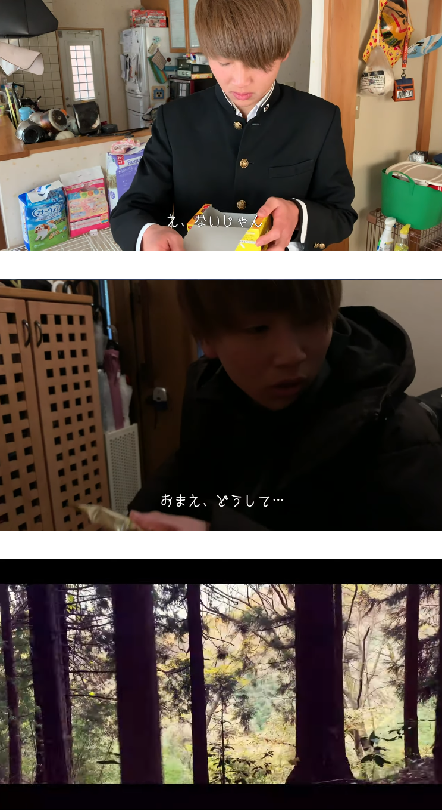

KENTAROU
SUZUKI
©KENTAROU SUZUKI



"オンライン動画コンテストBOVA"
movie
Role : director, extra
Soft : Photoshop, After Effects
BOVAの映像コンペに応募するための映像制作に取り組みました。主にディレクターに務め映像の構成から撮影まで携わりました。エンゼルパイが食べたくなるような映像を目的として制作に励みました。